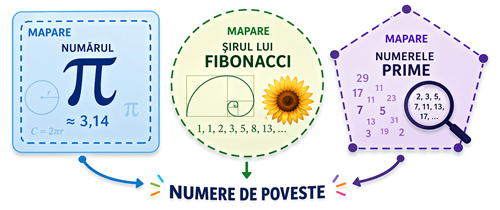

| Numerele prime și povestea lor | Numerele prime i-au fascinat, intrigat și provocat pe matematicieni încă din Antichitate. Aceste numere, care sunt divizibile doar cu 1 și cu ele însele, sunt atât simple de definit, cât și tulburător de complexe de descifrat. Totuși, în ciuda mileniilor de studii, comportamentul lor rămâneîn mare parte misterios, apărând aparent aleatoriu de-a lungul liniei numerice. Dar o descoperire recentărăstoarnă această perspectivă: un trio de cercetători, conduși de matematicianul Ken Ono, au descoperit o legătură surprinzătoare între numerele prime și un alt domeniu al matematicii: partițiile întregi. Această descoperire, prezentată în PNAS, deschide o nouă ușă către înțelegerea acestor obiecte fundamentale prin dezvăluirea unui model matematic „remarcabil” ascuns în spatele distribuției lor.Pentru a înțelege pe deplin semnificația acestei descoperiri, să revenim pe scurtla elementele de bază. Încă din secolul al III-lea î.Hr., savantul grec Eratostene ainventat o metodă ingenioasă numită „Sita lui Eratostene”. Acest proces implică cernerea tuturor numerelor întregi, eliminând pe cele cu mai mult de doi factori, pentru a păstra doar numerele prime. Simplă, eficientă – și încă utilizată pe scară largă astăzi. Dar această sită, oricât de ingenioasă ar fi, ilustrează și dificultatea problemei. La mai bine de 2.000 deani de la concepție, este încă una dintre cele mai bune metode de a detecta numerele prime,o dovadă a provocării colosale de a înțelege în profunzime aceste numere. |
La prima vedere, numerele prime sunt o curiozitate matematică. Totuși, sunt mult maimult decât atât: sunt „atomii” matematicii. Fiecare număr întreg poate fi descompus într-unprodus unic de numere prime, ca un fel de genetică matematică. Dincolo de rolul lor fundamental în teoria numerelor, acestea sunt esențiale în lumea noastră digitală: criptografia modernă, înspecial celebrul sistem RSA, se bazează pe dificultatea factorizării numerelor prime mari pentrua securiza tranzacțiile bancare online, comunicațiile și multe altele. |
 |